A version of Cellular Automata that can be used for making cave or island shapes. This one isn't too difficult to do, but there are some tricks to it.
It is done by looping through each pixel, and applying the following rule to it. if there are more than the threshhold of the same type pixels ajacent to it (diagonals included), the current pixel is unchanged, if the number of different pixels is more than the threshold, its type is swapped. Set the threshold to 4 or 5 for best results making the shapes above, but some interesting shapes can be made by using other numbers as well. You have to leave a buffer around the edge of the pattern as well, and preform the rule excluding the edge peices. This can also be used to determine what the outside counts as, I generally prefer to leave the edges as 'off'.
The process is started by randomly filling the grid with 'on' and 'off' cells. You can use a random chance (I tended to use 47%) or use some other method like perlin noise to distribute them. Then the above rule is applied multiple times to the cells, 4-5 times is usually enough for decent results but you might want to do it as many as 16 times.
Below you can see a pesudocode explanation:
generating_initial_noise = true;
applying_the_rule = false;
repeat ammount_of_detail {
for every_pixel {
if generating_initial_noise {
this_pixel.type = xx%_chance // Chance of being on or off
}
if applying_the_rule {
neighbors = count_ajacent_pixels_of_same(type);
if neighbors > threshold {
this_pixel.type = !this_pixel.type; // Swap the type
}
draw_to_display();
}
}
generating_initial_noise = false;
applying_the_rule = true;
}